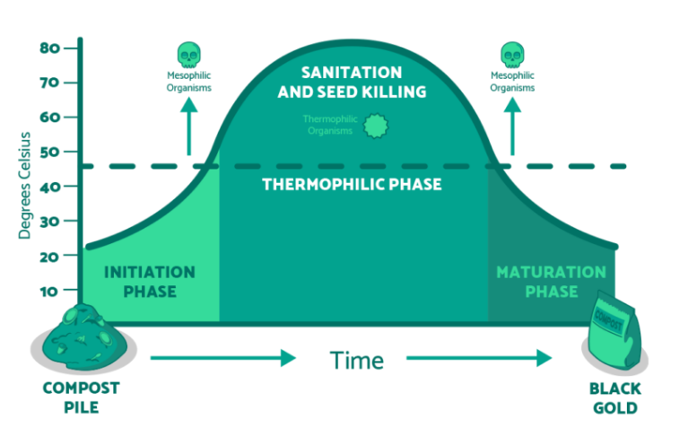

87 daily readings from two side-by-side composters tracked across three internal layers each. Both units reached thermophilic temperatures above 59 °C, confirming active microbial decomposition throughout the study window.
Middle layer peaked at 59.9 C, with all six C1 temperature maxima clustered in mid-May.
Upper layer stayed dry throughout while lower layer averaged high moisture and reached 100% at least once.
Internal heating stayed at 0 W across the full May–July slice — decomposition heat alone drove temperatures.
Middle layer hit 60.4 C — the overall study maximum — running slightly warmer than C1 throughout.
C2 carried noticeably more moisture higher up the pile, with a wetter upper layer compared to C1 across the study window.
Like C1, internal heating remained at 0 W — the stronger microbial activity in C2 was self-sustaining throughout.
Work Experience:
Education:
Language Skills:
IT skills:
Work Experience:
Education:
Language Skills:
IT skills:
Work Experience:
Education:
Language Skills:
IT skills:
Work Experience:
Education:
Language Skills:
IT skills:
Work Experience:
Education:
Language Skills:
IT skills:
This tab summarizes only the 87 filtered notebook rows already used across the page, so every finding below stays inside the May 2025 to July 2025 window.
All of the highest internal temperatures landed in mid-May, early in the filtered export.
Moisture concentrated in the lower layers while upper layers stayed far drier, especially in Composter 1.
These notes summarize only the filtered May to July 2025 notebook slice shown throughout this page.
The live measurements page is linked here for reference only. The findings on this tab are limited to the May-July 2025 notebook export above.
Keeping the evidence inside one study window makes the findings consistent with the charts and statistics already shown on this webpage.
In the filtered dataset, the middle layer peaked at 59.9 C in Composter 1 and 60.4 C in Composter 2.
All six internal temperature peaks clustered in the middle of May, showing the strongest heat build-up early in the export.
The lower layer reached 100% moisture in both composters at some point, while upper layers were often extremely dry.
Composter 2 kept the warmest middle layer and carried noticeably more moisture higher up the pile than Composter 1.
Within the exported notebook slice, outside temperatures ranged from 2.8 C to 26.7 C while compost temperatures climbed much higher.
In this notebook's filtered May to July slice, heating wattage stayed at 0 W throughout the exported rows.
Composting is turning organic waste into a valuable resource.
Compost is a dark, crumbly, soil‑like material that improves soil structure, boosts plant growth, and increases nutrient availability.
Compost is created from a mix of:
Composting relies on microorganisms like bacteria and fungi to break down organic matter into simpler compounds.
For creating ideal conditions it needs the right balance of temperature, moisture, and air.
To differentiate from (home) composting, anaerobic digestion occurs on an industrial level, in an oxygen-free environment, generating both biogas (renewable energy) and digestate,
making it well-suited for large-scale operations like farms and food processing plants. It takes longer but can manage tougher waste types.

Source: https://www.compostconnect.org/what-is-composting/
Mesophilic (initiation) Phase
During this phase, mesophilic (moderate temperature) microorganisms begin breaking down organic materials.
Thermophilic Phase
During this phase, the compost pile heats up thanks to the activity of thermophilic (heat-loving) microorganisms.
These high temperatures can help break down tougher materials.
Maturation Phase
Once the organic materials have broken down, the compost pile can cool down and enter the curing phase.
Beneficial microorganisms still work, just at lower temperatures.
The speed, efficiency, and quality of the final compost depend on a set of controllable environmental and nutritional factors.
1. Carbon to nitrogen (C/N) ratio
Optimal (C/N) ratio is between 20:1 and 40:1 for fast composting.
Too much nitrogen causes odors, but too little isn't enough for microbial growth, and compost remains cool
which means degradation at a slow rate.
The ratio decreases throughout the process to 10-15:1 in a finished product.
2. Moisture content
It allows microorganisms to move, reproduce, and break down organic material efficiently,
with optimal level at about 50–60%. Conditions that are too dry or too wet slow decomposition and reduce quality.
Managing moisture through watering, covering, or adding dry materials helps maintain healthy microbial activity and stable temperatures.
3. Temperature
A composting pile has to generate heat to actively decompose.
Suitable temperatures in thermophilic phase destroy pathogens, weed seeds, and fly larvae that would otherwise survive in the compost,
but temperatures above 65 °C harm beneficial microbes.
4. Oxygen supply
Aerobic composting requires adequate oxygen for microorganisms to function efficiently.
5. pH balance
Maintaining proper pH helps optimize microbial activity throughout the composting process.